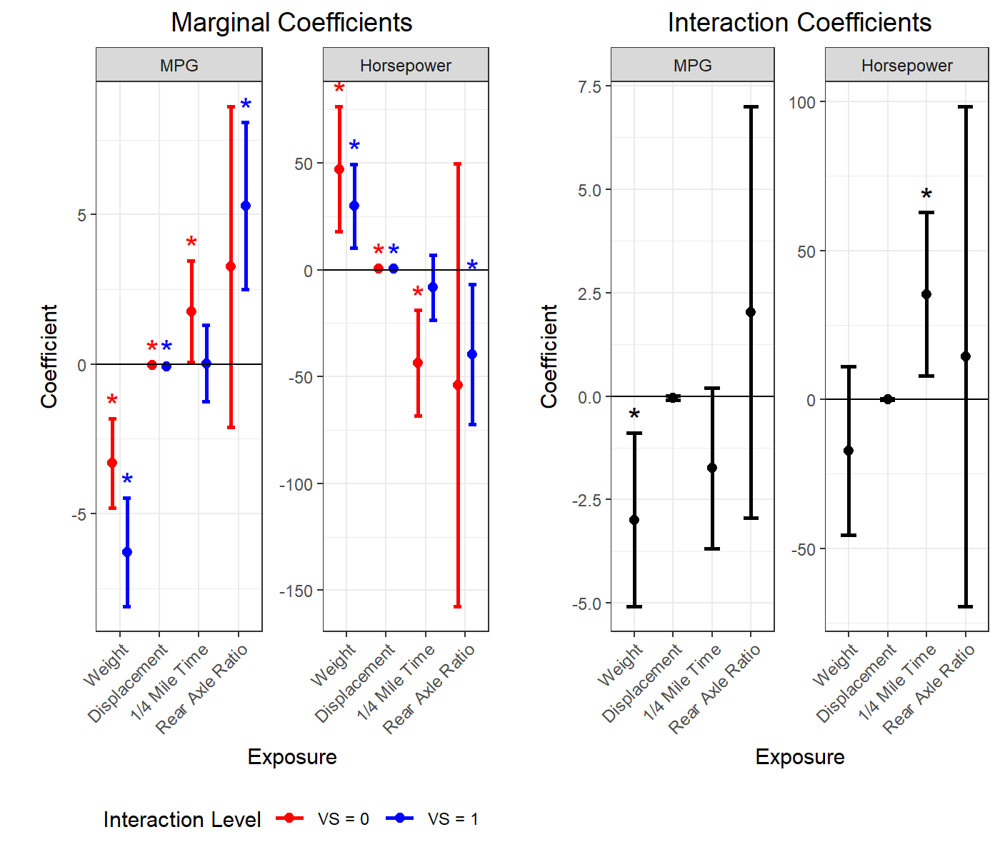
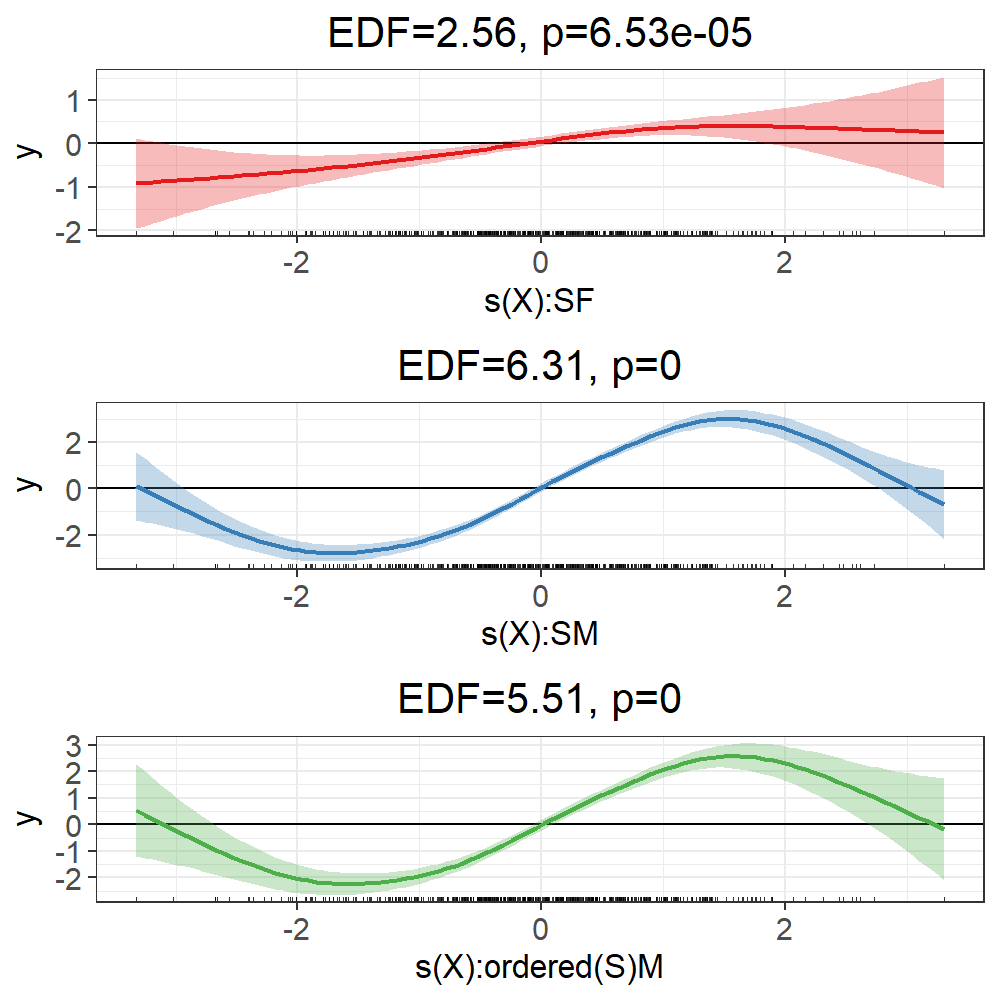
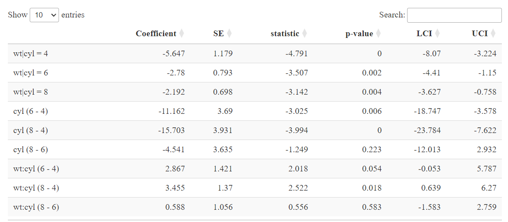
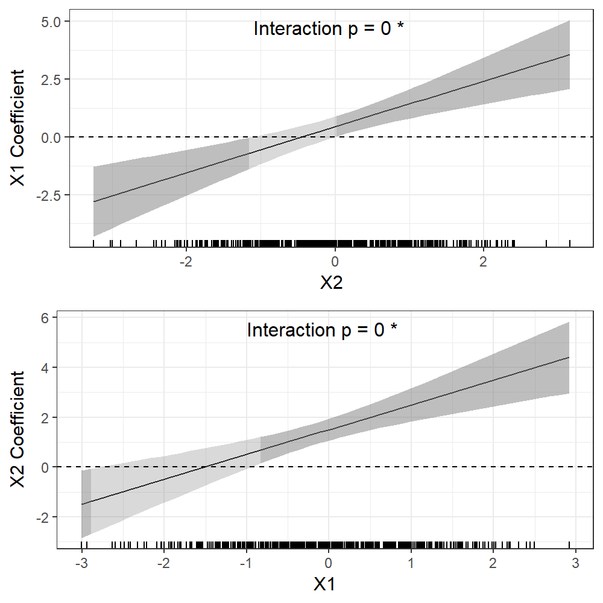
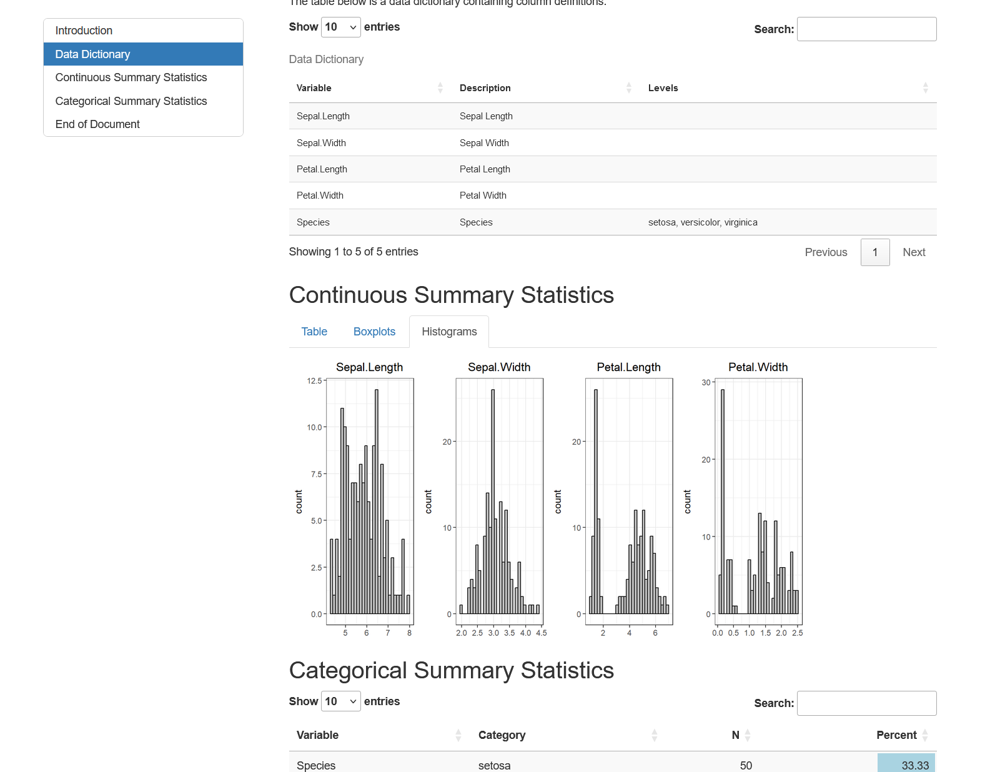
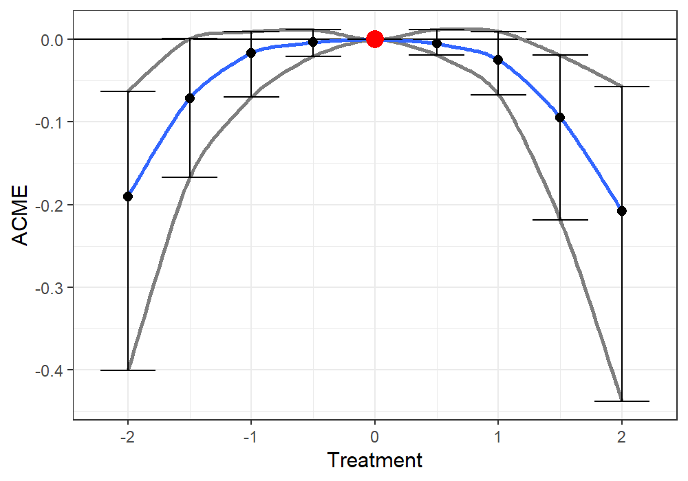
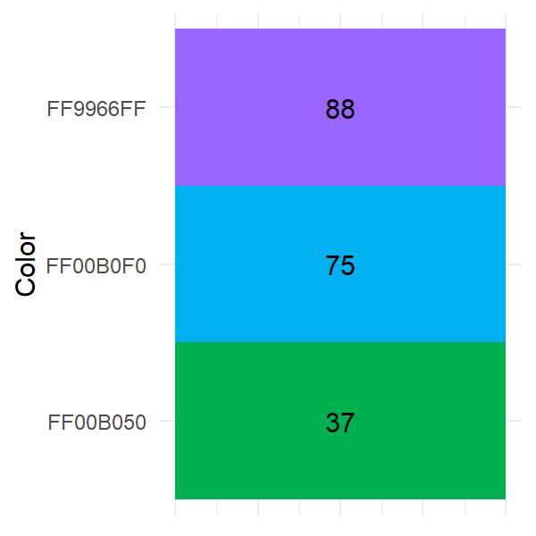

DrewDayRFunctions: An Overview
DrewDayRFunctions is an R package I created to share convenience functions that aid in epidemiologic and other statistical analyses, focusing on regressions, exploratory data analysis, visualizations, and mediation.
Click on each tab for a brief description of what each main function does:
This is a useful function for quickly running a whole bunch of linear regressions and getting useful plots and diagnostics out of them.
This runs many regressions by taking combinations of predictors, outcome, and covariates; performing linear regressions or generalized linear regressions for binary or count outcomes (logistic, log binomial, probit, Poisson, negative binomial, etc.); and returning 1. a table of coefficient and diagnostic values, 2. a summary plot, and 3. a list of all model objects for any follow-up analyses. Options include adding categorical or continuous interaction terms, using robust errors, performing multiple imputation using MICE, k-fold cross validation, and rerunning models when excluding high-leverage points.
Here is an example plot output for models concerning car engines with continuous outcomes MPG and Horsepower, continuous predictors Weight, Displacement, 1/4 Mile Time, and Rear Axle Ratio; and a categorical interaction term VS (V-shaped engine or straight engine):

This is a useful function for running lots of GAMs and getting back useful visualizations and diagnostics.
This function takes combinations of predictor of interest, outcome, and covariate variables, performs linear or binary generalized additive models, and returns 1. a table of parameter and diagnostic values, 2. summary plot(s), and 3. a list of all model objects. Options include adding continuous and categorical variable by smooth interactions, performing smooth selection, and rerunning models when excluding upper/lower quantiles of data to examine edge effects on smooth fits.
Here is some example output for a toy example with a continuous predictor (“X”) smooth interaction with the categorical variable sex (“S”). The red curve is for females, the blue curve is for males, and the green curve is the difference between those curves, each with effective degrees of freedom (EDF) and smooth p-values displayed:

This function extracts all the coefficients from regression models that have categorical variables with >2 levels.
This extracts all the binary combinations of contrasts for a categorical (factor) predictor of interest and/or interaction term from a linear model. For example, if a predictor variable of interest is a 4-level categorical treatment variable with factor levels {“placebo”, “drug1”, “drug2”, “drug3”}, a typical linear model will only return the “drug1 - placebo”, “drug2 - placebo”, and “drug3 - placebo” binary contrast coefficients. This function will return all binary contrast coefficients for all possible referent levels, meaning the aforementioned coefficients will be returned, as well the coefficients for “drug2 - drug1”, “drug 3 - drug 1”, and “drug 3 - drug 2”. Furthermore, ContrastCoefficients can also provide all contrasts for a categorical interaction term as well, including all marginal coefficients for the main effects (e.g., predictor given interacting variable = level 1, predictor given interacting variable level 2, etc.). This works for all sorts of linear models and GLMs, including with MICE imputation.
Below is example output for a model regressing MPG for an engine on continuous weight (“wt”) and categorical number of engine cylinders (“cyl”; 4, 6, or 8):

This visualizes continuous by continuous interactions and was used for a 2024 Melamine paper in Environmental Research:
This is a function for visualizing continuous by continuous interactions from linear regression models. These plots show how the coefficient between one variable in a bivariate continuous interaction and the outcome changes over levels of the interacting variable.
The example below is from a toy dataset and a model regressing some outcome on the main effects and interaction of predictors “X1” and “X2”:

This generates an interactive HTML Markdown document to summarize all the variables in a dataset.
This function takes a data frame and outputs an HTML Markdown document that contains an interactive table with a data dictionary if one is provided, an interactive table of summary statistics for the continuous variables as well as boxplots and histograms for those variables, and a searchable table showing frequencies for all categorical variables that also uses a bar plot to visualize frequencies. This is an easy way to summarize a newly obtained dataset or to send a general summary to someone who will be receiving a dataset.
Below is a screenshot from an example document using the built-in “iris” dataset:

This function evaluates and visualizes nonlinear mediation.
This function extends the functionality of the ‘mediate’ function from the ‘mediation’ R package for causal mediation analysis as defined by Imai et al. 2010 for modelling linear and nonlinear mediation effects in the case of a continuous treatment. Mediation analysis is applied over a range of continuous treatment values to obtain a curve of the average causal mediation effect (ACME), average direct effect (ADE), total effect, and the proportion mediated. This is useful for characterizing nonlinear mediation effects.
Here is example output from the associated plot.medcurve function. There is a parabolic curvilinear association between the exposure and mediator, and between the mediator and outcome. The red point is the comparison “control” treatment level, fixed at about the median. Each point and set of CIs reflect the ACME estimate when comparing a treatment at that level to the “control” treatment where the red point is (zero). Each point estimate is connected with a smooth fit to estimate the ACME function:

This function extracts and summarizes Excel spreadsheet background colors.
This function takes an Excel spreadsheet from a .xlsx file and creates a data frame where the values in the dataset are replaced with all the background colors in that Excel sheet. It also provides a table and heatmap plot showing how many cells have each color detected in the Excel spreadsheet. This function is useful for when important information is encoded in the background colors of an Excel file.
Here is an example plot that summarizes all colors in a given spreadsheet and total cell counts with each color:
